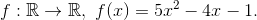

Funcția de gradul al II-lea
Reamintim definiția funcției de gradul al doilea, dată în secțiunea Definiție. Ecuația de gradul al II-lea, din cadrul eBook-ului Ghid | Funcția de gradul al II-lea.
Definiția FE24 : Funcția de gradul al doilea
O funcție , unde a, b, c sunt numere reale fixate și  se numește funcția de gradul al II-lea.
se numește funcția de gradul al II-lea.
Observații:
- Funcția de gradul al doilea este o funcție numerică.
- Condiția asigură faptul că nu este o funcție afină.
- Funcția de gradul al doilea este bine determinată când se cunosc coeficienții din legea de corespondență.
Exemple de probleme care conduc la funcții de gradul al doilea
- Aria pătratului cu latura
 este o depentență funcțională de forma .
este o depentență funcțională de forma . - În vid, spațiul parcurs de un corp în timpul
 sub acțiunea forței gravitaționale este dat de formula
sub acțiunea forței gravitaționale este dat de formula - Spațiul parcurs de un mobil în timpul în mișcare uniform - accelerată este dată de
Pentru a afla despre forma canonică, relațiile lui Viète sau despre propritățile acestui tip de funcție elementară, te sfătuim să accesezi următoarele pagini, din cadrul eBook-ului Ghid | Funcția de gradul al II-lea:
- Definiție. Ecuația de gradul al II-lea;
- Graficul funcției de gradul al II-lea;
- Pozițiile relative ale parabolelor și sistemele simetrice.
Ceea ce trebuie reținut sunt următoarele:
- dacă 0,"> atunci funcția de gradul al II-lea admite un punct de minim local, notat iar valoarea minimă este
- dacă atunci funcția admite un punct de maxim local, iar valoarea maximă este
Mulțimea valorilor funcției de gradul al doilea: Im f
Întâlnim două cazuri, în funcție de natura termenului :
- Dacă 0,"> atunci mulțimea valorilor funcției de gradul al doilea este
- Dacă atunci mulțimea valorilor funcției de gradul al doilea este
Problemă rezolvată:
Folosind noțiunile prezentate în paginile indicate mai sus, profesorii noștri de matematică ți-au pregătit următoarea problemă:
Fie funcția 
- Să se afle intersecția cu axele de coordonate ale funcției
 .
. - Să se reprezinte grafic această funcție.
- Să se studieze semnul acestei funcții.
Rezolvare:
- Intersecția cu axele:
Ne rezultă punctul  .
.

Ne rezultă punctele și
- Cum 0,"> ne rezultă că graficul funcției
 va fi o parabolă convexă, care va avea un punct de minim.
va fi o parabolă convexă, care va avea un punct de minim.
Calculăm coordonatele punctului de minim: .
Avem:
Reprezentând și punctele aflate la subpunctul a., graficul funcției este:
.png)
- Întocmim tabelul de semn:

Citim semnul din tabel:
- , pentru
 , pentru
, pentru